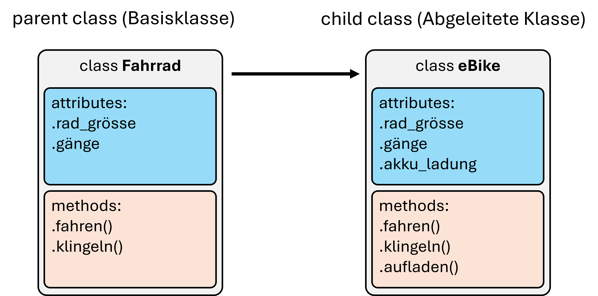

15. Object-oriented programming in Python#
We have seen how to define classes in Python and how to use them to create objects. We have seen how to define methods and assign attributes, and also how to use the init() method.
15.1. Class vs. object/instance#
There is often some confusion at the beginning of OOP (object-oriented programming). Not infrequently, it is also about the fundamental difference between the class and the object created.
In most cases, and in all the ones we have discussed so far, we can see the class as an abstract template for the objects created with it later. That is, the class defines which properties (attributes) and abilities (methods) objects should have.
An abstract class is defined via class XYZ:. The actual code in it, however, only becomes executable when an object of the class is created (a = XZY()). Attributes that are only set in the constructor (__init__()) are not created until an object of the class is created. That is why the following code does not work:
class DoNothing:
def __init__(self):
self.chill = True
print(DoNothing.chill) # => AttributeError: type object 'DoNothing' has no attribute 'chill'
So this is not possible, but only when an object is created:
a = DoNothing()
print(a.chill) # => True
15.1.1. What is self?#
The argument self refers to the respective instance of a class, i.e. the object itself. Code in which self appears can therefore only be executed meaningfully by created objects.
(By the way: Instead of self, a different name could be used, but since self is the default everywhere, we won’t make use of it.)
But what about code, e.g. assigned attributes, that can do without self?
An example would be something like this:
class MyClass:
class_value = 111
def __init__(self):
self.instance_value = 2222
# Use the class directly
print(MyClass.class_value) # --> 111
# print(MyClass.instance_value) # --> AttributeError
# Now create and use an instance of the class
my_object = MyClass()
print(my_object.class_value)
print(my_object.instance_value)
We are also talking here about class attributes (here: .class_value) and instance attributes (here: .instance_value). Created objects provide access to types of attributes, but the instance attributes are not available in the class itself.
What about methods then?
Here, too, we have typically worked with self so far. And correspondingly, we also speak of *instance methods here. These are also only accessible via created objects.
Example:
class SuperPrint:
def upper_print(self, text):
print(text.upper())
# instance method cannot be called via class:
SuperPrint.upper_print(“my text should be larger”) # => TypeError
# And the method is also not (like a function) globally available:
upper_print(“my text should be larger”) # => NameError: name 'upper_print' is not defined
Only when an object of the SuperPrint class is created can the upper_print() method be executed with it. The method thus belongs to all objects of the SuperPrint class and is otherwise not available, either through the class itself or globally as with a function.
printer = SuperPrint()
printer.upper_print(“my text should be printed in upper case”)
15.1.2. Class methods#
We have just seen that the methods we have programmed so far (with self) can only be executed via created objects (instance method). But there are also class methods that can be called via the class.
In Python, class methods are usually explicitly identified as such using a so-called “decorator”. However, we will not cover exactly what that is at this point (it will be covered later). The SuperPrint example would then look like this (@classmethod is the mentioned decorator):
class SuperPrint:
@classmethod
def upper_print(cls, text):
print(text.upper())
SuperPrint.upper_print(“my text should be printed in upper case”)
Here, too, there is a special first argument, which we now call not self but cls (for class).
Now the question: When do we use class methods?
As already mentioned, we will mainly work with instance methods. But there are also cases in which class methods are useful. One example could be an extension of the Point class that we had already created. Now let’s imagine we want to add a new method that creates a Point object with a random position, something like create_random_point(). But if we define this method with self as before, we can only call it via created objects. This would then mean that we have to create a Point object in order to then create a new Point object… not very intuitive. At such a point, a class method is the better choice:
import math
import random
class Point:
def __init__(self, x, y):
self.x = x
self.y = y
def position(self):
print(self.x, self.y)
def center_distance(self):
return math.sqrt(self.x ** 2 + self.y ** 2)
@classmethod
def create_random_point(cls):
return Point(random.random(), random.random())
random_point = Point.create_random_point()
random_point.position()
Since the class method in this case creates an instance, it is also referred to as a factory method.
In addition to the combination of methods and attributes discussed so far, there are many other possibilities offered by object-oriented programming. One that is mentioned particularly often is the so-called inheritance.
15.2. Inheritance#
Classes can pass on their properties to other classes. In practice, this is actually very useful in some cases!
In the bicycle example from the previous chapter, this would be a sub-type of bicycle that takes over the core properties of a bicycle (i.e. “inherits”), e.g. an eBike. 
But we can also look at this directly in a simple code example. We have just defined points (Point class) and now we want to design other geometric types. We don’t necessarily have to redefine everything, we can also do the following:
# Already executed above:
import math
class Point:
def __init__(self, x, y):
self.x = x
self.y = y
def position(self):
print(self.x, self.y)
def center_distance(self):
return math.sqrt(self.x ** 2 + self.y ** 2)
def distance_to_point(self, point):
dist_x = self.x - point.x
dist_y = self.y - point.y
return math.sqrt(dist_x ** 2 + dist_y ** 2)
# Define a new class:
class Circle(Point):
def __init__(self, x, y, radius):
self.x = x
self.y = y
self.radius = radius
a = Circle(11, 2, 5)
print(a.center_distance()) # => 11.180339887498949
Without having redefined a method, the call .center_distance() already works!
This is because we have said here that Circle may access the class Point. This is called “inheritance” and accordingly, Circle is the child of Point.
Point is called the “base class” or super class or parent class (parent class), while in this example, Circle is called the “derived class” or subclass or child class (child class).
This can also be used to make interesting membership or type queries. In the above example, a is an object of the class Circle, but it is also connected to the parent class Point. In Python, such affiliations can be queried with isinstance():
print(isinstance(a, Point)) # => True
print(isinstance(a, Circle)) # => True
15.2.1. super()#
In the example above, we have overwritten the complete init method in the derived class (Circle) with a new one. This may seem a bit strange - and rightly so - because the methods are actually very similar and a large part of the code thus occurs multiple times.
There is another way to customize the constructor (__init__()) and at the same time access the constructor of the parent class using super():
class Circle(Point):
def __init__(self, x, y, radius):
super().__init__(x, y) # this executes the constructor of the parent class
self.radius = radius
a = Circle(11, 2, 5)
print(a.center_distance())
Especially when a class constructor sets many parameters and/or contains further steps, using super() at this point makes the code simpler.
15.3. Extensive example (Exercise –> Game Pig)#
Another important point that we started in the exercise was to get a feeling for when, why, and how to use classes at all. As an example, we started programming a first small game: Pig (or “Evil One”). The rules of the game are simple:
Rules of the game:
2 players play against each other and take turns. Both start with 0 points.
The player rolls 1 dice (random number -> 1-6). The results are added together until the player decides to stop, or until a one is rolled. If you stop without rolling a one, then all the points are added together. If a one is rolled, no points are added. The first person to reach 100 points wins.
To program this game in an object-oriented way, you first have to consider which classes should/must exist. Typically, you look for the most important objects/elements/actors. In this example, the following classes would make sense:
Dice –> class Dice
Player –> class Player
Game/Game Rules/Gameplay/Game Mechanics –> class PigGame
Next, we have to look at the properties (attributes) and actions/options (methods) that the classes would need. The simplest thing here is the class Dice, which must be able to roll the dice, which is nothing more than providing random numbers from 1 to 6.
from random import randint
class Dice:
def __init__(self, sides=6):
self.sides = sides
def roll(self):
return randint(1, self.sides)
As mentioned above, this class doesn’t do anything yet. To use it, a Dice object must first be created.
dice = Dice()
print(dice.roll())
The second class is then Player and that is already much more difficult!
class Player:
def __init__(self, name):
self.score = 0
self.name = name
def move(self, dice):
print(f“\n{self.name}'s turn -----------”)
print(f“Current score: {self.score} ---------”)
additional_score = 0
while True:
roll = dice.roll()
additional_score += roll
print(f“{self.name} got a {roll}! Total={additional_score}”)
if roll == 1:
break
user_choice = input(“Continue (y/n)? >>> ‘)
if user_choice == ’n”:
self.score += additional_score
print(f“+ {additional_score} --> {self.score}”)
break
Each player has two properties: a name (.name) and a score (.score). In addition, there is a method for making a move (.make_move()). We created and tested this method in the exercise. A very important element of the object-oriented approach can already be seen at this point: objects are passed on to other objects. So first a dice object has to be created so that a Player object can play!
player1 = Player(“Helmut”)
player2 = Player(“Sandra”)
dice = Dice()
player1.make_move(dice)
player2.make_move(dice)
So: Just as I would give the dice (an object) to a player in a real dice game, the object Dice is also given to Player here. And not as a fixed property (i.e. as an attribute), but only as an argument in the method .make_move(). This may seem a bit strange at first. After all, a dice roll is not particularly complicated and I could just write a function for it or even just call random.randint(1, 6) directly.
The main advantage is that it is clearly structured which properties are set where. Namely, only with the associated objects. In other words: When it’s player1’s turn, the dice goes to the corresponding make_move() method, etc.
If you want to play the game with a different dice, you just have to change the dice, for example like this:
player1 = Player(“Helmut”)
player2 = Player(“Sandra”)
dice = Dice(sides=4)
player1.make_move(dice)
player2.make_move(dice)
Now we come to a few more features and possibilities of object-oriented programming.
15.4. Data Encapsulation#
Data encapsulation is basically nothing more than the protection of data (attributes) from direct access. We have already seen that attributes can easily be viewed and changed, e.g. point1.x = 5. But ideally most programmers try to design their classes in such a way that attributes are accessed primarily via so-called “getter” and “setter” methods.
15.4.1. Public -> Protected -> Private#
An important property of classes, also in the context of data abstraction, is the ability to define access rights to the attributes. Python is much less strict here than many other programming languages, i.e. we are not creating any high-security programs right now. But even in Python there is an important distinction between freely accessible (public), protected and inaccessible (private) attributes.
Python has three levels here:
name (Public): Attribute without leading underscores; can be read and written within a class and also from outside.
_name (Protected): Although they can be read and written from outside, the developer makes it clear that these attributes should not be used in this way; protected attributes are important for importing.
• __name (Private): Cannot be seen or used from outside
class MagicSpell:
name = “Expecto Patronum”
_book = ‘Magic Spells IV”
__explanation = ’Here is how it works...”
spell = MagicSpell()
print(spell.name) # => Expecto Patronum
print(spell._book) # => Magic Spells IV
print(spell.__explanation) # => AttributeError: ‘Spell’ object has no attribute ‘__explanation’
So here you can see that the protected attributes can still be accessed as normal! In Python, the underscore in front of an attribute name is more of a hint to users and especially developers not to change these variables. This is similar to a “Enter at your own risk” sign.
The attributes with the status private will throw an AttributeError, i.e. these can no longer be accessed and changed as before.
The same is of course possible with a constructor:
class MagicSpell:
def __init__(self, name, book, explanation):
self.name = name
self._book = book
self.__explanation = explanation
spell = MagicSpell(
“Expecto Patronum”,
“Magic Spells IV“,
“Here is how it works...”
)
print(spell.name) # => Expecto Patronum
print(spell._book) # => Magic Spells IV
print(spell.__explanation) # => AttributeError
But before anyone gets the idea of using this to protect sensitive data: Python does not have a really strict protection of attributes! Access is only deliberately made more difficult. In theory, however, the hidden attributes can still be viewed with:
print(spell._MagicSpell__explanation)
# just for your info, please don't use this in programs!
# Or, even easier, just open it in Spyder's “Variable Explorer”...
As a short example, let’s say we don’t want users to be able to simply change the.x or.y of aPoint object:
class Point:
def __init__(self, x, y):
self.__x = x
self.__y = y
def get_position(self):
return self.__x, self.__y
def set_position(self, x, y):
self.__x = x
self.__y = y
a = Point(10, 3)
print(a.get_position())
a.set_position(8, 4)
print(a.get_position())
# a.x # => AttributeError
Since you can’t just see the attributes with status, but they are not even displayed as existing, this is also called the secret principle, another concept in OOP.
Ok. Fair enough. But what’s the point of all this?
The idea behind this (or at least one idea) is that developers have intended the developed classes for certain uses and, on the one hand, want to avoid “incorrect” use, but on the other hand, do not want to unnecessarily complicate use by revealing too many details about the exact implementation.
Or to put it another way: when we use a Python class, we are usually more interested in how it can be used than in what the code behind it looks like. For example, if we create a list, e.g. with my_list = [3, 5, 7, 1, 4] and then want to sort it, it is enough to know that there is a method called .sort() for this (and how to use it). What sub-functions etc. are behind it is not our main concern for now.
Well, sometimes a look under the hood is nice…
15.5. Magic methods#
Magic methods or dunder (from double under) are not only called magic, they also seem a bit like that at the beginning. On the one hand, everyone (at least I) has probably never heard of them before and on the other hand, experiments with them can have very strange consequences.
It may happen, for example, that certain variables do not do what they are supposed to do, maybe like this:
>>> a
5
>>> a + 7
12.123456
>>> a - 1
4.1010101
What’s happening here?
Python broken?
Any ideas?
…
…
…
OK, maybe something different first: What are dunder/magic methods anyway?
These are methods whose names are surrounded by two underscores. They are not intended for direct invocation but are triggered by certain actions, including operators. For example, __add__() is the method that is called when using +:
a = 5
print(a.__add__(7)) # => 12
print(a + 7) # => 12
Both options are identical here, except that using .__add__() directly is not intended.
There are really a lot of such methods (see for example tutorialstecher.com)! Some examples that we have already used (without knowing it) are:
__add__()for+__sub__()for-__mul__()for*__truediv__()for/__eq__()for==
But also methods that are used in type conversion, e.g.
__str__()forstr()__float__()forfloat()
Now maybe you have an idea what might have happened in the strange code example above?
Hint: briefly test with type() what a actually is!
>>> type(a)
<class '__main__.FunkyNumber'>
Ta-da!
a is not an int at all, as might have been thought, but an object of the class FunkyNumber:
class FunkyNumber(int):
def __init__(self, value):
self.value = value
def __add__(self, x):
return self.value + x + 0.123456
def __sub__(self, x):
return self.value - x + 0.1010101
a = FunkyNumber(5)
print(a + 7)
print(a - 1)
print(a * 7)
Super funky. But what else can it do (besides cause confusion, of course)?
There are actually quite a few useful uses for magic methods in object-oriented programming in Python. We can look at an example by going back to our standard example with the class Point. Some things may not work as we would like them to and magic methods can help.
import math
class Point:
def __init__(self, x, y):
self.x = x
self.y = y
def center_distance(self):
return math.sqrt(self.x ** 2 + self.y ** 2)
a = Point(10, 3)
b = Point(10, 3)
print(a == b) # => False
What we see here is that two points are not considered equal (==) by Python even though they have exactly the same coordinates. The reason for this is that Python initially assumes that two objects are only equal if they also refer to the same object. In other words:
a = Point(10, 3)
b = a
print(a == b) # => True
But it would also make sense (depending on the application) for two points to be considered equal if their coordinates are equal. We can achieve this with magic methods.
import math
class Point:
def __init__(self, x, y):
self.x = x
self.y = y
def __eq__(self, p):
return (self.x == p.x) and (self.y == p.y)
def center_distance(self):
return math.sqrt(self.x ** 2 + self.y ** 2)
a = Point(10, 3)
b = Point(10, 3)
print(a == b) # => True
By the way: even within the standard data types in Python, there are some “creative” solutions. A good example of this is multiplication with strings, so that5 * “-” is possible and yields “-----”, is also something that can simply be defined with magic methods.